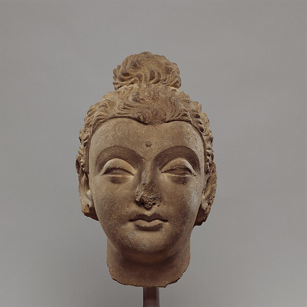
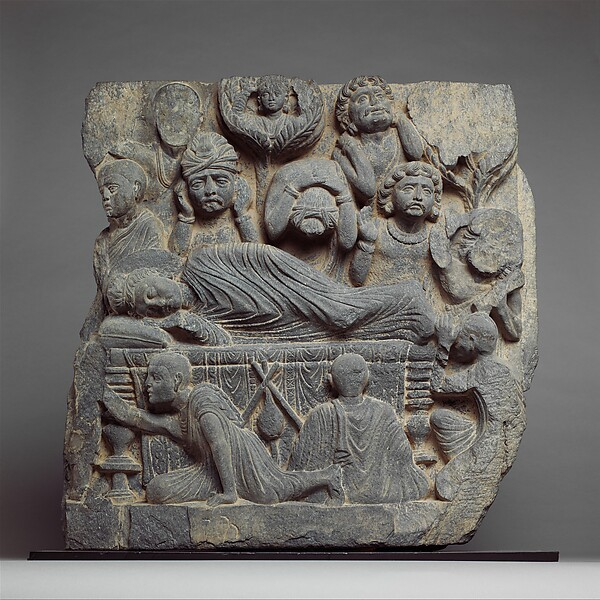
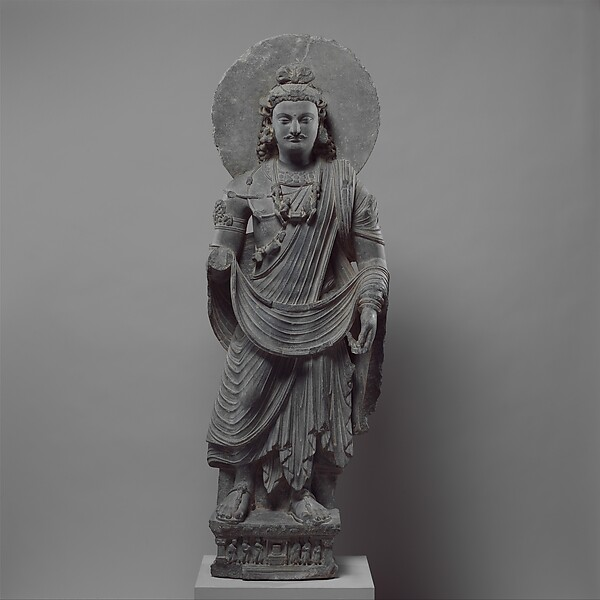
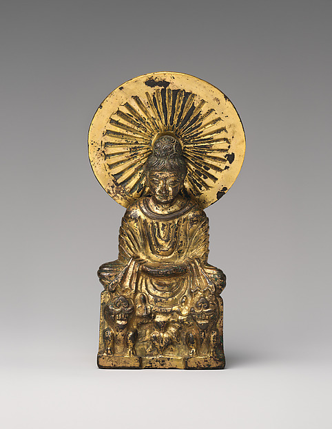

世界上最早的一張佛陀圖像，與最早關於佛陀的報導，分別是什麼？
以下考據取自開放博物館、Europeana、OpenAlex、DOAB 與 Guardian 等公開資料庫。
佛身隱於象徵，五百年後才現人形
佛陀入滅後最初的兩、三百年，佛教藝術刻意不直接描繪佛陀本人。在巴爾胡特（Bharhut）、桑奇（Sanchi）等早期遺址，藝匠以象徵代替佛身——菩提樹、法輪、佛足印、空寶座、佛塔、傘蓋。因此，最早「與佛陀有關的圖像」，其實是這些象徵，而非佛像。
佛陀以「人形」現身，大約在西元 1 世紀才出現，而且幾乎同時誕生於兩個藝術中心：
學界最常被點名為「最早、且年代確鑿」的人形佛像候選：比馬蘭舍利盒（Bimaran casket，大英博物館，約 1 世紀），以及迦膩色伽錢幣（Kanishka，約 127–150 CE）——錢幣上站立的佛陀旁，用希臘字母標著「ΒΟΔΔΟ（Boddo＝佛陀）」，是少數有確切年代的最早佛像之一。
以下為大都會藝術博物館（Met）開放近用（Open Access）藏品，可一窺佛像最初成形時的面貌——點圖可看館藏頁：




兩千五百年前的人物，何時成了新聞？
「新聞報導」是近代報紙時代之後才有的東西。真正「最早關於佛陀的記載」並不是新聞，而是早期佛典（口傳後寫定的巴利三藏／阿含）。現代新聞資料庫只覆蓋近代，因此查不到「人類史上第一篇佛陀報導」。
我們能誠實回答的，是兩件事：新聞庫裡最早出現佛陀的紀錄，以及最具份量的一則「關於歷史上佛陀」的報導。
考古團隊在佛陀傳統出生地藍毗尼（Lumbini, 尼泊爾）摩耶夫人廟下方，挖出一座西元前 6 世紀的木造結構，是目前已知最早、年代確鑿的佛教建築，把佛陀生平的考古證據往前推。2013 年 11 月經 National Geographic、BBC 等全球大幅報導，可說是「關於歷史上佛陀」最具重量的一則現代報導。
兩個「最早」，一句話記住
| 最早的佛陀圖像 | 最早的佛陀報導 | |
|---|---|---|
| 答案 | 人形佛像約西元 1 世紀首見於犍陀羅與秣菟羅；更早是「無像時期」的象徵（法輪、佛足印、菩提樹）。 | 新聞庫意義下：Guardian 最早索引到「Buddha」是 1993；真正有份量的是 2013 藍毗尼考古發現（西元前 6 世紀佛寺）。 |
| 最早實證候選 | 比馬蘭舍利盒、迦膩色伽錢幣（ΒΟΔΔΟ）。 | Coningham 等 (2013)《Antiquity》論文。 |
| 資料庫 | 大都會博物館、Europeana、OpenAlex、DOAB。 | OpenAlex、Guardian。 |
佛陀的「臉」，在他身後約五百年才被刻出來；
佛陀的「最早一則新聞」，其實是 2013 年挖出他出生地的那座木構佛寺。